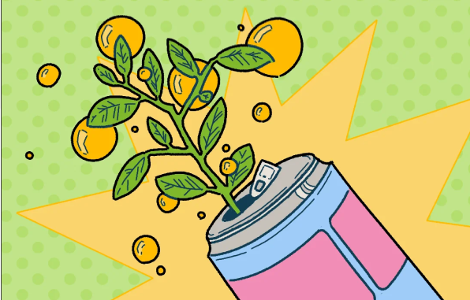

Verbindend, fris en vol energie: een duik in de opkomst van mate
Mate-frisdranken winnen aan populariteit in nederland...
Als je ooit in Berlijn bent geweest...
Club-Mate werd in de jaren '90 op de markt gebracht...
Waar komt deze groei vandaan
Sindsdien is het onlosmakkelijk verbonden met...